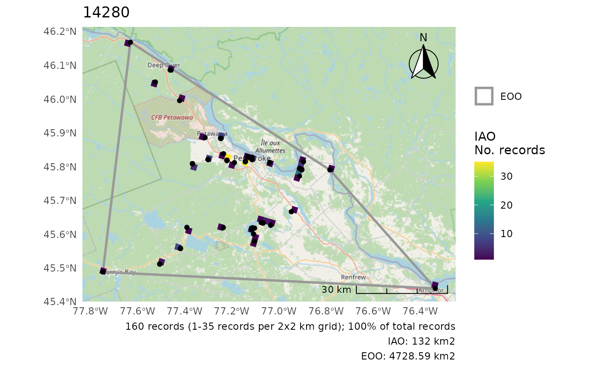
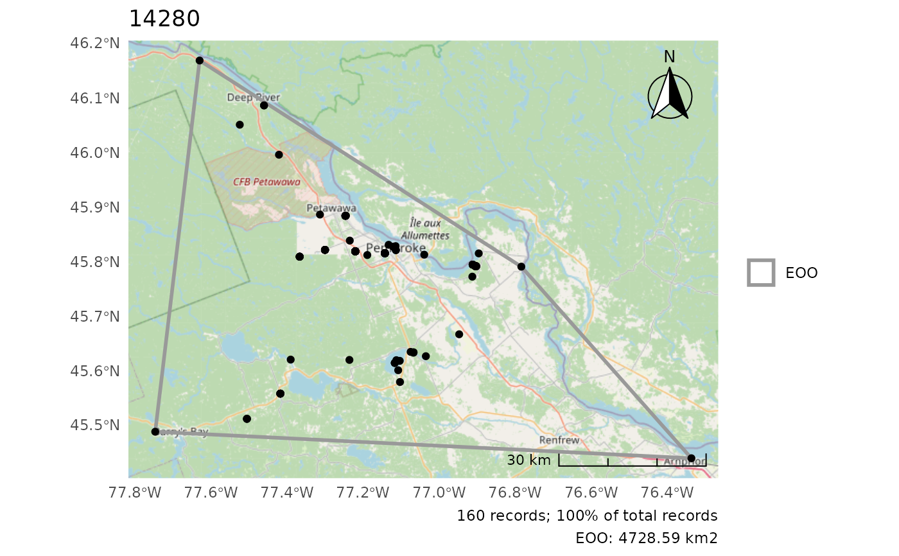
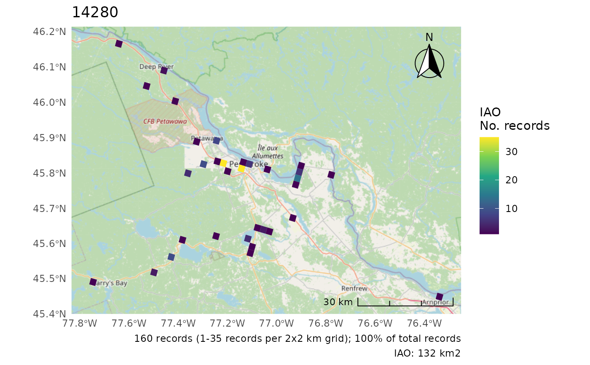
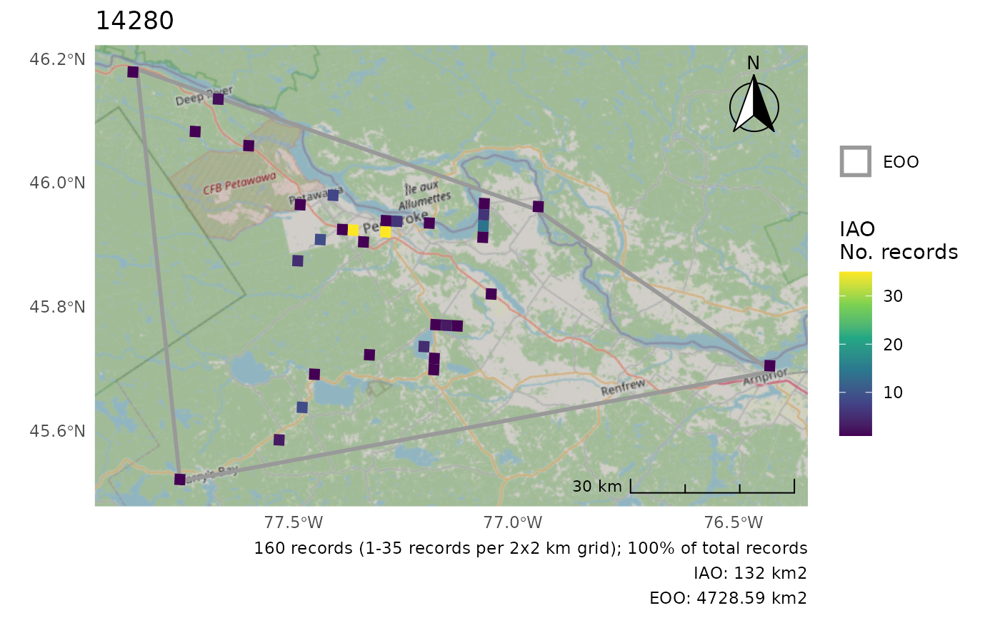
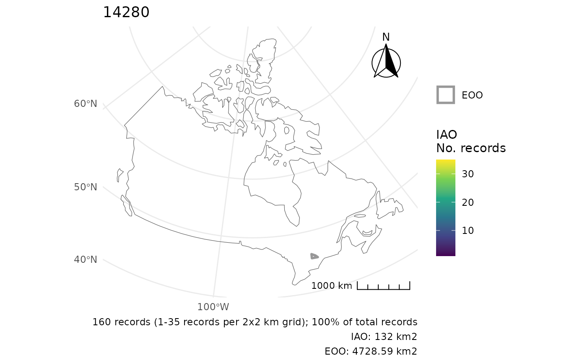
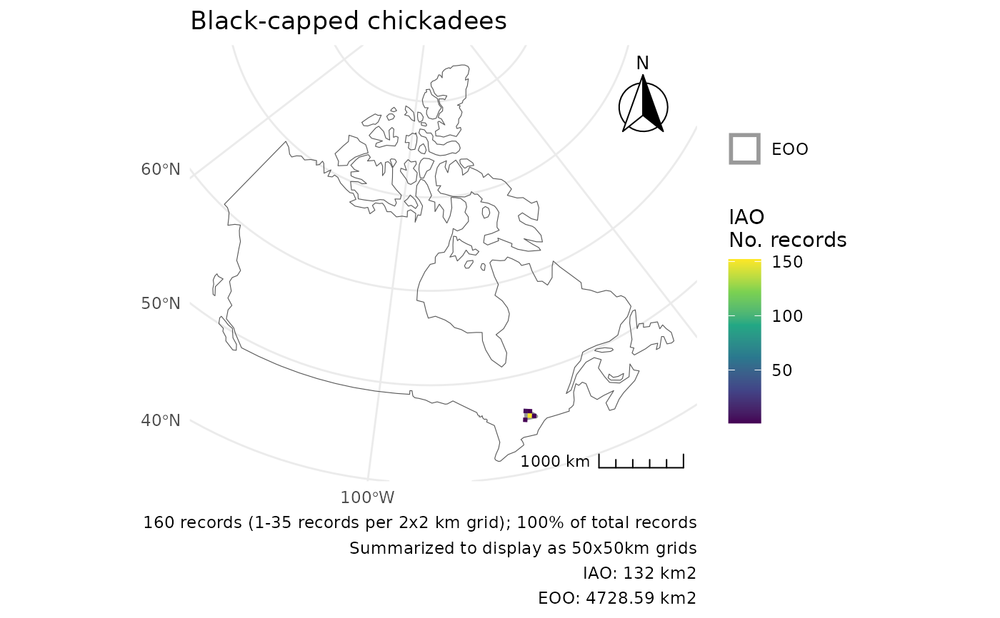
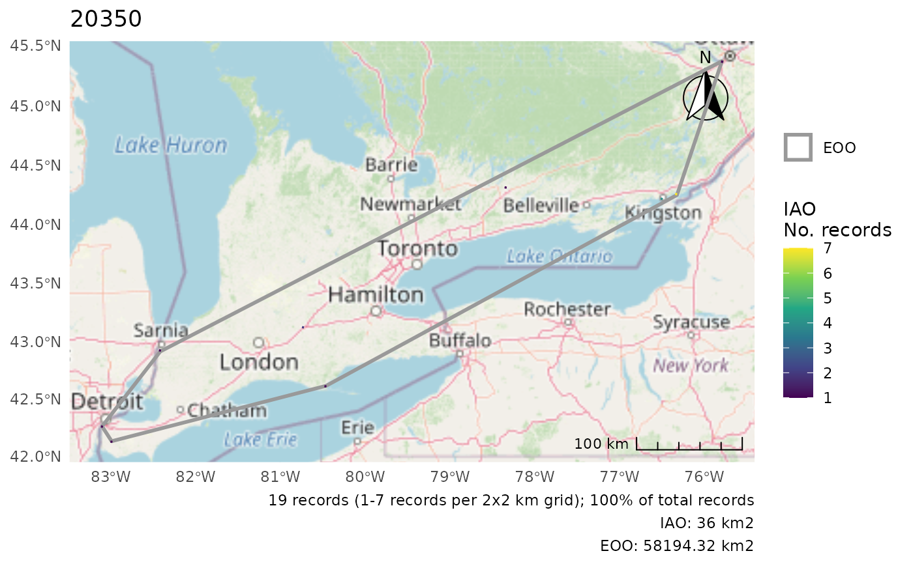
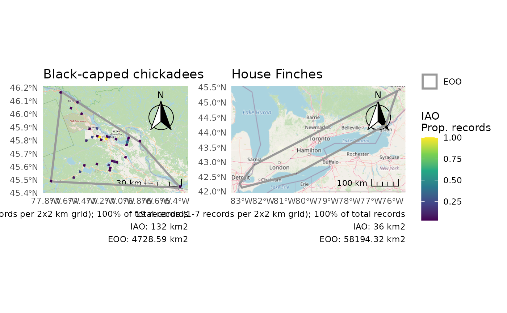

Creates a plot of COSEWIC ranges for illustration and checking. Note: If using maptiles from OpenStreetMap ("osm", the default) in a public document/website/etc., you must attribute OpenStreetMap.
Usage
cosewic_plot(
ranges,
which = c("eoo", "iao"),
points = NULL,
grid = NULL,
map = "osm",
iao_prop = FALSE,
crs = NULL,
group = "species_id",
title = "",
zoomin = -1,
arrow_location = "tr",
scale_location = "br",
verbose = TRUE,
species
)Arguments
- ranges
List. Output of
cosewic_ranges()withspatial = TRUE.- which
Character vector. Which range types to calculate. Any combination of "eoo" and "iao", default is both.
- points
Data frame. Optional raw data points to add to the plot (are not filtered, regardless if a
prop_include < 1was used incosewic_ranges().- grid
sf data frame. Optional grid over which to summarize IAO values (useful for species with many points over a broad distribution).
- map
Character or sf data frame. Underlying base map over which to plot the values.. "osm" by default to use OpenStreetMap base maps via
ggspatial::annotation_map_tile(). Can be one ofrosm::osm.types(), a sf polygon base map, orNULLfor no base map.- iao_prop
Logical. Whether to show IAO as a proportion for easier plotting of multiple groups (allows collecting legends by the patchwork package).
- crs
A coordinate reference system (see
?sf::st_transform()). Defaults to Albers Equal-Area for Canada (ESRI:102001) for area calculations. Note that it must be a projection (i.e. not simply a reference system like 4326 used for GPS) for area calculations. IfNULLfor plots, uses the CRS of the base map or of the IAO/EOO data.- group
Character. Name of the column containing group identification. By default this is
species_idin NatureCounts data.- title
Character. Optional title to add to the map. Can be a named by group vector to supply different titles for different groups.
- zoomin
Numeric. Zoom adjustment for
ggspatial::annotation_map_tile(). Only applies if map defines a map tile (e.g., "osm")- arrow_location
Character. Location for the North arrow, one of 'tr', 'tl', 'br', or 'bl', for top right, top left, etc.
NULLomits the arrow.- scale_location
Character. Location for the map scale, one of 'tr', 'tl', 'br', or 'bl', for top right, top left, etc.
NULLomits the scale.- verbose
Logical. Show messages?
- species
Deprecated. Use
groups.
Examples
r <- cosewic_ranges(bcch)
#> (This message is shown once per session)
#> As of naturecounts v0.5.0 `cosewic_ranges()` now uses `prop_include = 1` instead of `eoo_p = 0.95`.
#> This defines the proportion of observations used in both IAO and EOO calculations.
#> The default is `prop_include = 1` (include all observations).
#> This message is displayed once per session.
cosewic_plot(r)
#> Zoom: 9
#> Fetching 9 missing tiles
#>
|
| | 0%
|
|======== | 11%
|
|================ | 22%
|
|======================= | 33%
|
|=============================== | 44%
|
|======================================= | 56%
|
|=============================================== | 67%
|
|====================================================== | 78%
|
|============================================================== | 89%
|
|======================================================================| 100%
#> ...complete!
 cosewic_plot(r, points = bcch)
#> Zoom: 9
cosewic_plot(r, points = bcch)
#> Zoom: 9

# Only one or the other
cosewic_plot(r, which = "eoo", points = bcch)
#> Zoom: 9

cosewic_plot(r, which = "iao")
#> Zoom: 9

# Use a different CRS for the map (only applies if not using map tiles)
cosewic_plot(r, crs = 3347) # No change
#> 'crs' is only applicable when not using map tiles. Map tiles always use CRS of EPSG:3857.
#> Loading required namespace: raster
#> Zoom: 9

cosewic_plot(r, map = map_canada(), crs = 3347)

# Summarize IAO over larger grid
cosewic_plot(
r,
grid = grid_canada(50),
map = map_canada(),
title = "Black-capped chickadees"
)

# Plot multiple groups - separate plots
m <- rbind(bcch, hofi)
r <- cosewic_ranges(m)
p <- cosewic_plot(r)
p[[1]]
#> Zoom: 9
 p[[2]]
#> Zoom: 6
#> Fetching 4 missing tiles
#>
|
| | 0%
|
|================== | 25%
|
|=================================== | 50%
|
|==================================================== | 75%
|
|======================================================================| 100%
#> ...complete!
p[[2]]
#> Zoom: 6
#> Fetching 4 missing tiles
#>
|
| | 0%
|
|================== | 25%
|
|=================================== | 50%
|
|==================================================== | 75%
|
|======================================================================| 100%
#> ...complete!

# Plot multiple groups - Use IAO as a proportion for identical legends
p <- cosewic_plot(
r,
iao_prop = TRUE,
title = c("14280" = "Black-capped chickadees", "20350" = "House Finches")
)
# Use patchwork to combine into a single figure
if(requireNamespace("patchwork", quietly = TRUE)) {
library(patchwork)
wrap_plots(p) +
plot_layout(guides = "collect")
}
#> Zoom: 9
#> Zoom: 6
